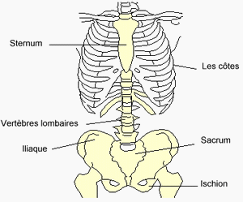
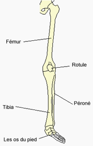
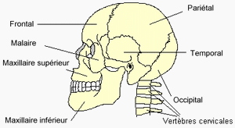

Le squelette humain
Notre corps peut bouger grâce aux os et aux muscles qui sont commandés par le cerveau. L'ensemble des os de notre corps s'appelle le squelette. Le corps humain possède 206 os. Chacun de ces os a un nom. Les os sont articulés entre eux. Les os sont reliés entre eux par des ligaments. Les muscles sont attachés aux os par des tendons.
Le squelette est articulé
Les os sont reliés entre eux par des ligaments. C'est pour cela qu'on peut faire des mouvement.
La colonne vertébrale
Si tu passes ta main sur le milieu de dos d'une autre personne, tu vas sentir quelque chose de dur :
C'est la colonne vertébrale.La colonne vertébrale est souple.
Elle est constituée de petits os: les vertèbres

Quelques os
- Main : ensemble d’os qui comprend cinq doigts et grâce auquel on peut saisir des objets.
- Pied : ensemble d’os qui comprend cinq orteils et grâce auquel on peut marcher.
- Tibia : gros os de la jambe situé entre le genou et le pied.
- Omoplate : os plat large, en forme de triangle et situé dans le haut du dos.
- Humérus : os du bras situé entre l’épaule et le coude.
- Crâne : boîte arrondie qui recouvre et protège le cerveau.
- Côtes : os au nombre de 24, courbés en forme d’arc et qui forment les côtés de la poitrine
Voir plus
Les os de la jambe
Les os de la jambe s'articulent en trois endroits: la hanche, le genou et la cheville.
Les os de la main
Chaque doigt est composé de trois petits os.
Les os du pied

Les os du bras
Les os du bras s'articulent en trois endroits: l'épaule, le coude et le poignet.
Les os de la tête
La mâchoire inférieure est le seul os du crâne qui peut bouger.
